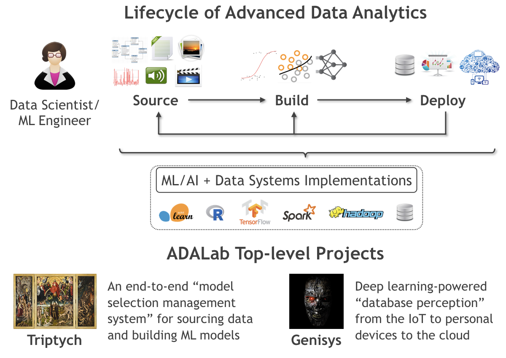
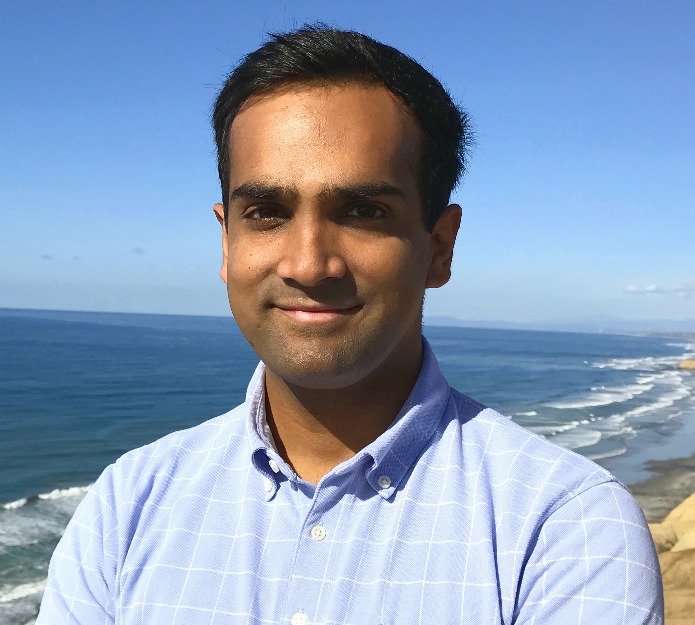

Arun's Data Analytics (ADA) Lab @ UCSD
Introduction
As the scale, complexity, and variety of data grows (aka Big Data), the use of machine learning (ML) and artificial intelligence (AI) techniques to make sense of, and interact with, such data — collectively called predictive data analytics, statistical data analytics, ML-based data analytics, or simply advanced data analytics (also ADA!) — is increasingly critical for data-driven applications in the enterprise, Web, science, and other domains. Alas, building and deploying ML/AI-powered data analytics applications still involves far too many bottlenecks that slow down the lifecycle of such applications, raise costs, frustrate many application users, and in some cases, make high-quality data-driven decision making almost impossible.
The mission of the ADALab is to democratize advanced data analytics by making it dramatically easier, faster, and cheaper to build and deploy ML/AI-powered data analytics applications throughout their lifecycle.
We are an academic research group headed by Dr. Arun Kumar, and we are a part of the Department of Computer Science and Engineering (CSE) at the University of California, San Diego (UCSD). We are members of CSE's Database Lab and affiliate members of the Artificial Intelligence Group and Center for Networked Systems.
Overview of Our Research
The ADA lifecycle typically revolves around data scientists or ML engineers. Based on conversations with dozens of such data-related professionals, we abstract the ADA lifecyle as follows. After identifying the tasks where ML/AI might benefit their application in terms of business impact or scientific insights, the data scientist steers three main processes, as illustrated below:
Data Sourcing: Identify, collect, clean, and organize data in to a form that can be used to train ML models.
Model Building: Perform model selection with the data to obtain desired ML models.
Model Deployment: Integrate trained ML models with the application and oversee lifecycle.
|  |
The ADALab's approach to democratizing advanced data analytics involves accelerating the ADA lifecyle by removing bottlenecks for both the efficiency of the systems and algorithms involved and the productivity of the data scientists involved.
Towards this grand goal, we synthesize and innovate upon the fields of data management, ML/AI, systems, and human-computer interaction. Our projects target all parts of the ADA lifecycle, and our work spans the whole gamut of building new data systems, algorithms, empirical analysis, and theoretical analysis. All of our systems are released as open source software.
We also enjoy interacting with, and learning from, practitioners — data scientists, ML/software engineers, and domain scientists — and working with them to help them adopt our systems and ideas.
The list of current ADALab projects is here: Projects.
The list of ADALab publications is here: Publications.
Recent ADALab News
05/18: Preprint of the Nimbus paper is out!
04/18: Lingjiao Chen receives a 2018 Google PhD Fellowship, the only student in the database area! Congratulations to Lingjiao and thank you to Google!
02/18: Supun presents a poster on Vista at the inaugural SysML mini-conference.
02/18: Arun interviewed on the topic of advanced data analytics and ML systems for a SIGMOD blog post.
01/18: Preprint of the DAnA paper, a collaboration with Hadi Esmaeilzadeh, is out!
Full list of lab news items here: News.
Members
Faculty
|  | Arun Kumar |
Graduate Students
 |
Lingjiao Chen |
 |
Supun Nakandala |
 |
Vraj Shah |
Anthony Thomas |
Undergraduate Students
Side Li |
Alumni
Mingyang Wang. MS, CSE, UCSD, 2017.
Sponsors
We thank the following organizations for their generous support of our research. Any findings or opinions expressed in our research publications or articles are our own and do not necessarily reflect the views of any of these organizations.
About our Lab's Name
Apart from being a convenient acronym, it is also a tribute to Ada Lovelace, widely regarded as the first computer programmer. This tribute is part of our lab's commitment to help foster a diverse and inclusive community in computing, as enshrined in the UCSD Principles of Community, for people from all backgrounds, including women, under-represented minorities, and LGBTQ+ people.